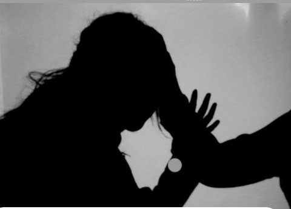

El feminicidio es un crimen de odio, entendido como el asesinato de una mujer por el hecho de ser mujer. El concepto define un acto de máxima gravedad, en un contexto cultural e institucional de discriminación y violencia de género, que suele ser acompañado por un conjunto de acciones de extrema violencia y contenido deshumanizante, como torturas, mutilaciones, quemaduras, enseñamiento y violencia sexual, contra las mujeres y niñas víctimas de este. El feminicidio representa el extremo de un continuum de terror antifemenino que incluye una amplia variedad de abusos verbales como físicos, tales como violación, tortura, esclavitud sexual, abuso sexual infantil incestoso o extrafamiliar, golpizas físicas y emocionales.
La violencia contra las mujeres tiene su origen en la desigualdad de género, es decir, en la posición de subordinación, marginalidad y riesgo en el cual éstas se encuentran respecto de los hombres.
La muerte violenta de las mujeres por razones de género, tipificada en nuestro sistema penal como feminicidio, es la forma más extrema de violencia contra la mujer y una de las manifestaciones más graves de la discriminación hacia ellas.
En nuestro Código Penal Federal el feminicidio se encuentra tipificado en el artículo 325, el cual establece lo siguiente:
“Comete el delito de feminicidio quien prive de la vida a una mujer por razones de género. Se considera que existen razones de género cuando concurra alguna de las siguientes circunstancias:
Comúnmente los homicidios que se cometen contra las mujeres no son investigados tomando en consideración que podrían tratarse de feminicidios.Por esta razón, el Modelo de protocolo latinoamericano de investigación de las muertes violentas de mujeres por razones de género recomienda que todas las muertes violentas de mujeres que en principio parecerían haber sido causadas por motivos criminales, suicidio y accidentes, deben analizarse con perspectiva de género, para poder determinar si hubo o no razones de género en la causa de la muerte y para poder confirmar o descartar el motivo de ésta.
En este mismo tenor se encuentra la sentencia de la Suprema Corte de Justicia de la Nación (SCJN) relacionada con el caso de Mariana Lima Buendía, la cual establece que en el caso de muertes de mujeres se debe:
 A diferencia de otros tipos de asesinato, los feminicidios suelen ocurrir en el hogar como consecuencia de violencia de género. También se categorizan dentro de los crímenes de odio, dado que se dan en un contexto en el que lo femenino ha sido estigmatizado durante años. La palabra “feminicidio” está en disputa; hay autores que afirman que incluye cualquier asesinato cuya víctima sea una mujer, independientemente del género de quien lo cometa o de cuáles sean sus motivaciones. El feminicidio es la manifestación más extrema del abuso y la violencia de hombres hacia mujeres. Se produce como consecuencia de cualquier tipo de violencia de género, como pueden ser las agresiones físicas, la violación, la maternidad forzada o la mutilación genital.
La motivación para el crimen es una de las peculiaridades principales del feminicidio en relación a otros tipos de homicidio. Según Diana Russell, a quien se atribuye la popularización de la palabra “feminicidio” (“femicide” en inglés”), algunas de las motivaciones principales para estos asesinatos son la ira, el odio, los celos y la búsqueda de placer. Otras variables que Russell considera relevantes son la misoginia, el sentido de superioridad de género y la concepción de las mujeres como posesión. Estas variables se transmiten culturalmente y favorecen la violencia de los hombres hacia las mujeres. Por otro lado, los asesinatos de mujeres en el ámbito de la pareja también están ligados, estadísticamente, al consumo de alcohol o de otras drogas por parte del homicida, si bien estas acciones no pueden ser atribuidas solamente a un fenómeno puramente bioquímico.
| Porcentaje | Forma |
|---|---|
| 21% | Golpes (Trauma) |
| 17% | Impactos de bala |
| 16% | Apuñalamiento |
| 13% | Asfixiamiento |
| 12% | Extrangulación |
Como podemos observar en esta tabla, las formas en las que una mujer es asesinada corresponde con 21% los golpes y traumas, proseguido con un 17% impactos de bala (pueden ser de uno a varios), mientras que otras formas fueron correspondidas con 16% apuñalamiento, 13% asfixiamiento y 12% la extrangulación.